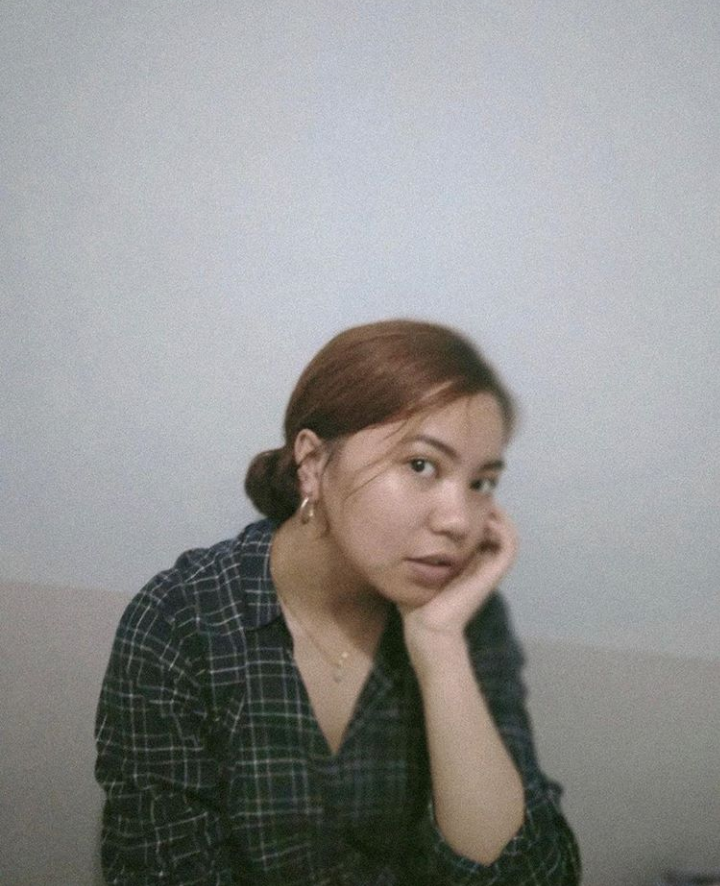

About
I am Audry Almayda. I live in Philippines, and I am currently studying BSIT in Saint Louis Univeristy. Aside from being an aspiring web developer in the near future, I'm interested on things such as
taking photos, acrylic painting, charcoal painting, watercolor painting, colored pencil drawing, photo and video editing, writing, and playing guitar. I also like reading philosophical works and history
sometimes.
In this website, I intend to share my works which are products of my self expression.
No one can construct for you the bridge upon which precisely you must cross the stream of life, no one but you yourself alone. -Friedrich Nietzsche
